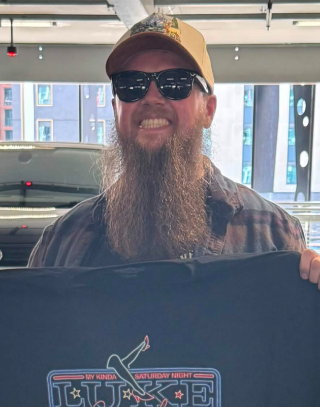
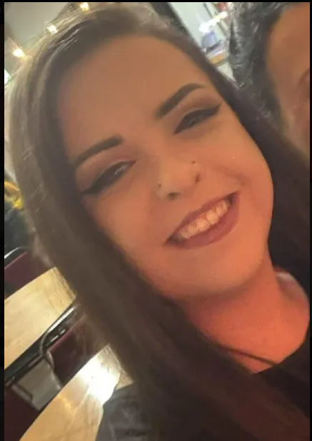
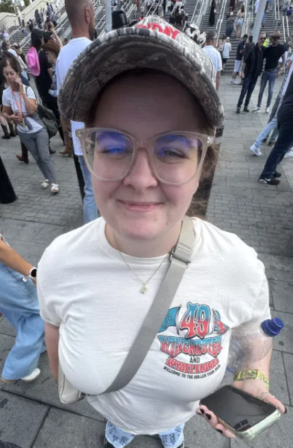

About & Investigation Team
Grounding paranormal investigation in scientific measurement, historical research, and objective analysis.
Meet the Team
Paul "Pabs"
Leading investigation sessions with an emphasis on environmental telemetry, baseline monitoring, and historical context.

Jason
Right-hand partner on investigations, working closely on live sessions, tech setup, and location data capture.

Chelsea
Managing our platforms, field updates, community interaction, and digital content reach across socials.

Gail
Bringing essential banter and high energy to keep the team sharp and upbeat during those quiet night vigils.

Chandler
Keen to join but a little bit too young for now, we will continue day time investigations, but he comes up with some great out of the box experiment ideas!
Our Methodology
We take a balanced approach to every location. By combining objective scientific measurement, historical research, and careful observation, we test anomalies thoroughly before drawing conclusions. Eliminating environmental false positives—such as local interference, electrical wiring, or drafts—is essential to our process.
Equipment & Tech
- ⚡ K2 & EMF Meters
- 📻 REM Pods & Spirit Boxes
- 🎙️ Digital Audio Recorders
- 📹 IR Night-Vision Camcorders